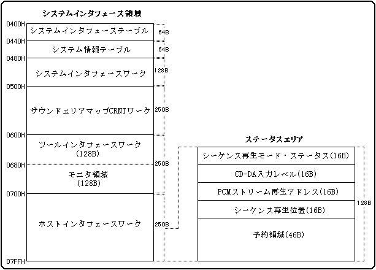

★SOUND Manual
★サウンドドライバプログラマーズガイド
★SOUND Manual
★サウンドドライバプログラマーズガイド
ステータスエリア

| +0 | シーケンス再生モード(0-4) |
| +1 | シーケンス再生ステータス(0-FFh) |
シーケンスの再生中は、現在の状態がモード・ステータスエリアに随時書き込まれています。シーケンス再生が現在どういう状態であるかを知る場合には、モード・ステータスエリアを参照してください。
モード・ステータスエリアは発音管理番号0から７に対応して、2バイト×8シーケンス分の計16バイトあります。エリアアドレスの詳細は、システム領域のホストインターフェースワークの項にありますのでそちらを参照してください。
［ シーケンス再生モード ］
| 0x00 | 初期状態 |
| 0x01 | 再生中 |
| 0x03 | 再生中一時停止 |
| 0x05 | フェード中 |
［ シーケンス再生ステータス ］
| 0x00 | 正常 |
| 0x80 | 分解能がSEGASATURNの能力を超えている。 |
| 0x81 | テンポデータがない。 |
| 0x82 | イベントデータがない。 |
| 0x83 | テンポデータが範囲外に設定されている。 |
| 0x84 | シーケンスデータの中にコントロールがひとつもない |
| 0x85 | 存在しないバンクを指定した。 |
| 0x86 | 存在しないプログラムを指定した。 |
| 0x87 | バンクが設定されていない状態でプログラムチェンジを行った。0X85のエラーが発生した場合、続けてこのエラーが起こるケースが多いようです。 |
| 0x88 | Total levelに対してVolume biasの値が大きすぎる。 |
| 0x89 | 存在しないバンクに対してミキサチェンジを行った。 |
| 0x8A | MONO MODEを使用した |
| 0x8B | Toneエディタ上でLayerが設定されていない。 |
| 0x8C | 同時発音が32ヶを超過したためもっとも古いキーオンが強制的に潰された. |
| 0x8D | 存在しないレイヤを指定した。 |
| 0x8E | DSPでトラブル発生 |
| 0x8F | 未対応のMIDIイベントを発行した。 |
| 0x92 | FM音源チャネルが多すぎて発音できないノートが発生した. |
| 0x93 | slotの二重アサイン（プログラムのエラー） |
| 0x94 | 1〜16以外のMIDIチャネルで演奏しようとした. |
| 0x99 | すべてのスロットがFMで埋まっているためNOTE ONがキャンセルされた. |
| +0 | PCMストリーム再生位置 (0-15) |
| +1 | 未使用 |
現在再生中のデータ位置です。PCMストリーム再生バッファの先頭からの相対サンプル数で、値は0から15が格納されます。モニタできるのは4Kサンプル単位（8bit再生なら4KB、16bit再生なら8KB単位）ですので、値が1だけ進んだと言うことは再生位置が4Kサンプル進んだということを意味します。また、ステレオ再生の場合でも、RchとLchは同じ再生アドレスとなります。
PCMストリーム再生位置エリアはストリーム再生番号0から７に対応して、2バイト×8ストリーム分の計16バイトあります。エリアアドレスの詳細は、システム領域のホストインターフェースワークの項にありますのでそちらを参照してください。
| +0 | シーケンス再生位置 (H) |
| +1 | シーケンス再生位置 (L) |
シーケンスの再生中は、シーケンスの再生位置が本エリアに格納されます。値は0からFFFFhまでがシーケンシャルに格納されます。これは再生開始からの時間を示すもので、だいたいどの位置を再生中かを知る目安となります。100msecごとに値が1だけ進みます。
シーケンス再生位置エリアは発音管理番号0から７に対応して、2バイト×8シーケンス分の計16バイトあります。エリアアドレスの詳細は、システム領域のホストインターフェースワークの項にありますのでそちらを参照してください。
注意：シーケンス再生位置は絶対時間ですので、テンポが変わると同じ値でも示す位置は変わってきます。再生中のシーケンスと正確に同期を取るためには、シーケンスデータ中に同期メッセージを格納する方法等で対応してください。
★SOUND Manual
★サウンドドライバプログラマーズガイド